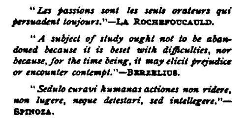

Human Sexuality | by J. Richardson Parke
This book contains a Medico-Literary Treatise On The Laws, Anomalies, And Relations Of Sex With Especial Reference To Contrary Sexual Desire
| Title | Human Sexuality |
| Author | J. Richardson Parke |
| Publisher | Professional Publishing Co. |
| Year | 1906 |
| Copyright | 1906, Professional Publishing Co. |
| Amazon | Human Sexuality |
By J. Richardson Parke, Sc.b., Ph.G., m.d.
(Late Acting AwKant Surgeon, U. S. Army)
 Publisher's Preface
Publisher's Preface- Both the need and purpose of the present book will be readily apparent to the intelligent reader. The work is ably, graphically, entertainingly, and scientifically written; and presents a wealth of sc...
- Author's Preface
- THE question of human sexuality has always been regarded, more or less, as something to be handled only with literary tongs. Even professionally, although the taboo has been measurably lifted within r...
- Faults And Merits Of Writers On Sex Themes
- Much has been written, good, bad and indifferent, on the diverse matters which enter into the laws and relations of sex. Part is the product of unlearned quacks, whose motives and qualifications I do ...
- Faith In American Intelligence
- And it is a pleasure to reflect, notwithstanding the human inconsistencies I began by noting, that in this country, at least, with its predominant intelligence, and liberty of thought, no writer who c...
- Health The Foundation Of Happiness
- Health, says Solomon, is a faithful ambassador. Its voice must be heard before all others. The Creeks deified happiness, making it the supreme good; but disregarded those laws of health upon which...
- Luxury Conducive To Lust
- Pratensia held that the bodies of persons who feed gluttonously, live at ease, and indulge themselves with wine, are full of bad spirits and devilish lusts;1 and Hierome advises us, if our horse be ...
- Penalties Of Sexual Precocity
- And this is no overdrawn picture, as the body of the work will only too sorrowfully prove. Well does Flourens exclaim—man does not die—he kills himself 1 The soil of youth, unplanted with the seeds ...
- Sexual Life Of Man
- Although it is difficult to lay down any precise scientific data on the subject, it is extremely probable that in a state of nature, and freed from the influences which a high civilization has undoubt...
- The Woman-Movement In America
- The present tendency in this country to the apotheosis of woman, with her so-called rights and advanced thought, in plain reversal of the scriptural and traditional decree of female subordination ...
- Causes And Effects Of Sexual Vice
- The man who does not work, Bays President Roosevelt, cannot be happy. The woman who does not labor, remarks Acton, I think, in his History of Prostitution, rich and honored though she be, bears...
- Causes Of Prostitution
- There are practically only two causes for prostitution among women— wealth and want. Innate modesty, and her normal feebleness of sexual desire, compared with that of man, may, under ordinary conditio...
- Difficulties Attending This Kind Of Writing
- In concluding these prefatory remarks it may not be amiss to eay that, while we are surrounded on all sides by physiological sex-manifestations, they are, from the very nature of such things, as diffi...
- Present State Of The Sex Problem
- I make no apology for writing this book. I think it will satisfy, in some measure at least, a professional need. If not, if it contain no little grain of thought worthy of perpetuation, no ray of know...
- Chapter One. Moral And Social Aspects Of The Sexual Relation
- WHEN the Creator told Adam that it was not good for him to be alone, and made woman for his companion, the inference is sufficiently obvious that the new being had been created not only with a need an...
- Procreation A Divine Purpose
- Religious cenobitism was, and is, but one of those morbid, unnatural and sexually subversive customs with which, among heathen races particularly, ethical thought has always delighted to invest the sa...
- Sexuality The Basis Of Society
- Leaving the consideration of these themes, however, for a more appropriate place, and continuing our inquiry into the moral and social aspects of the sexual relation, I consider Maudsley's statement, ...
- The Importance Of Its Cultivation
- But while the sexual life leads to the very highest The Importance manifestations of virtue, religion and patriotism, it of Its Cultivation cannot be denied, and must always be borne in mind, that it ...
- Woman's Position In The East
- In all Oriental countries woman has always been regarded as a chattel, a plaything, the mere toy of man's lust; and yet the Woman's Position facts of history are lacking to prove that she was more in ...
- Influence Of Sexuality On Religious Beliefs
- The religions of the East—and after all that means the religions of the world—began and ended in sexual pleasure. The prophet, or priest, married his girl-wives in droves, not singly; stimulated himse...
- Sexuality Of Heathen Gods
- The religions of Greece and Rome deified woman; Sexuality of and if you run through the records of rational mythol-Heathen Gods ogy, you will find the sexual life its vital element. Jupiter, the fa...
- Christianity The Savior Of Woman
- It remained for Christianity to be the savior of woman. But it took even Christianity, with all its sexually uplifting precepts, and ennobling principles, nearly two thousand years to accomplish the d...
- Sexual Abuses Fostered By The Early Church
- But with the growth and dissemination of Christianity, strange as it may seem, came an insidious, but not tiie less real, tendency to sexual perversion. While among the Greeks and early Romans, as wel...
- Refinement Of Intellect Not Refinement Of Morals
- The indifference and lack of opprobrium with which both Greeks and Romans, as well as some of the earlier nations, treated this form of autogenous vice, prove, very clearly, that refinement of intelle...
- Revulsion Against Contrary Sexual Habits
- It was not until the beginning of the eighteenth century, when the publication in London of a book of most alarming nature* first called attention to the, asserted, evil consequences of the vice, that...
- Sexuality In The Home
- Society and the home are founded on the influence of sex. From it are developed benevolence, softness and magnanimity. The sense of decorum proceeds from the animal instinct of cleanliness, and this i...
- As The Basis Of True Love
- The sexual, more than any other physical element, corresponds to the Brunonian theory of life. It lies at the bottom of society's Esthetic feelings. A hidden world of ideals reveals itself in every gr...
- An Attempt To Define Love
- Guianerius attributed love to the hot temper of the testicles, pure and simple.1 Ferandus, to such as are very spermatic, and full of seed;1 Savonarola attributed the fiercest love to monks, friar...
- Modesty As A Phenomenon Of Sex
- The latter emotion, modesty, seems to be so generally diffused amongst all races, so common to both sexes, and so early a manifestation in the sexual life that we are fairly justified in regarding it ...
- Association Of The Sexes An Instinct
- The early fathers foresaw the danger to society in this voluptuous intermingling of the sexes, and strove to remedy it by ecclesiastical laws of separation, the spirit of which was caught up by the pr...
- Marriage Outside Of The Clan Or Tribe
- At a very early period society made a discovery upon which was founded one of the most universal of our moral laws, and one which, I think I am safe in stating, has been the least frequently infringed...
- Sexual Sins Rare Among Savages
- And right here, in this brief Burvey of the rise and Sexual Sins Rare relations of society, and sexuality, we encounter a Among Savages remarkable fact. The more brutal and savage men are the fewer si...
- Primitive Emancipation Of Woman
- The savage selected his wife for utility, the civilized man selects his for beauty. At first the hair of women was no longer than that of men, possibly not so long. Long-haired women being universally...
- Adultery A Simple Debt In Africa
- With them adultery is simply a question of debt; Adultery a but their law of debt is terribly severe, as the body Simple Debt in and life of the insolvent belong to the creditor. No Africa other senti...
- Influence Of Christianity On The Sexual Life
- Marriage, hallowed by the influence of religion, becomes pure, sacred. Even the noblest principles and sublimest ethics of philosophy have failed to control the impulses of sex; but Christ taught, eve...
- One Law For Both Sexes
- That men should be subjected, therefore, to the same laws and restrictions which govern women is wise, for their own good as well as the good of society; and although seemingly now far distant, I cann...
- Relative Vanity Of The Sexes
- In all times and among all races, says Krafft-Ebing, women show a desire to adorn themselves and be charming.1 This is quite true, although denied by Westermarckf but it is equally true that man i...
- Origin And Development Of Human Modesty
- Many psychologists regard clothing as the cause or beginning of modesty. Sergi, indeed, so taught until 1894, when fuller reflection led him to attribute it rather to the excreting functions of the bo...
- Rudiments Of Dress
- In Samoa the only requisite garment for either man or woman was an apron of leaves, but they possessed so delicate a sense of propriety that even when bathing they had a girdle of leaves or some oth...
- The Dance
- The native dances of Africa, unlike those of almost every other pagan country, are, with one exception, of a serious, almost religious character. This one was intended, originally, to represent the ac...
- Sexual Immorality In Guise Of Religion
- Religion, in Rome, was made a pretext for many of her obscene orgies and debaucheries, which may be mentioned here for their features of immodesty. There were temples to the deities—Isis, Venus Volupi...
- Sexual Depravity In Early Rome
- In view of these public debaucheries, all authorized by both law and religion, a fair idea may be formed of what private life must have been among these noble Romans. It was not luxury alone, it was n...
- Nakedness
- Concerning the communication quoted by Mr, Ellis,a in which it is stated that the girls of Japan, after their bath, would mingle freely with the men, holding out their hair as if for innocent admirati...
- Civilization And Sexual Abuses
- As to the part which civilization plays in mitigating sexual abuses I cannot do better than quote the words of one of the clearest thinkers on this theme that recent times have produced. Contact wit...
- Chapter Two. Sexual Selection Or The Law Of Choice
- IT is a fact of very early observation that some law of contrariety underlies the sexual union. The manly man will always seek the most womanly woman; as the most womanly man will usually be found coh...
- Mutilations Of Savages
- In discussing the means resorted to by men and women to make themselves mutually attractive, I shall omit largely, although they are far from uninteresting, those brutal customs of savage races, which...
- Painting The Penis
- Among the Guarayos, when a young man falls in love, he paints himself from head to foot, the penis usually being of a different color, and, armed with his war club, lurks about the cabin of his Dulcin...
- Tattooing
- Mr. Darwin says ( Descent of Man, n, 369) that in not one single country from the polar regions in the north to the confines of New Zealand in the south, was tattooing unknown among the aborigines; ...
- Clothing As A Means Of Attraction
- As civilization progressed, ornamentation came to be applied to clothing instead of to the naked body; clothing itself being most probably an outgrowth of the same desire for adornment, instead of bei...
- Dancing As A Love-Lure
- At the dances and festivals of many savage peoples the moat shocking licentiousness was frequently indulged in. The young men and maidens painted themselves in the most brilliant and gaudy colors, lik...
- Other Practices In Courtship
- There is no man who does not desire to appear well before the opposite sex; but the different methods men have of manifest-Other Practices ing this desire are, to say the least, confusing. Thus in Cou...
- Nakedness In Europe
- Leaving these savage races, and entering Europe, ; we shall be surprised to find that in Germany, up to the sixteenth century, complete nakedness was almost the daily rule. By this statement I mean, ...
- Immodesty Of Children
- Children, while bashful, are proverbially destitute of what we call modesty; a circumstance which directs attention very sharply to a distinction too often lost sight of by writers, but which is empha...
- Modesty As Associated With Sexual Susceptibility
- There is no feminine charm, or combination of charms, that can preserve its attractiveness for the male for any length of time if modesty be lacking; and prostitutes who have not learned the art of si...
- Relation Of The Face To The Sexual Organs
- Custom baa established a curious complimentary relationship between the face and the sexual organs, in the former of which the first symptom of modesty—blushing—is commonly revealed. Martial, long ago...
- Immodesty Of Civilization Accounted For
- I have noted elsewhere that many savage races are really more modest than the civilized; and the fact is quite susceptible of explanation. The teaching of at least the outlines of physiology in our pu...
- Other Conditions Which Influence Sexual Choice
- Newspapers, magazines and various publications of a quasi-scientific character, literally teem with discussions—for the most part foolishly or illogically founded—as to why men do not marry, the ca...
- Woman Loves Above Herself
- It will be found, as M. de Quatrefages has well remarked, that while men are less delicate in this respect, women persistently refuse to lower themselves by the sexual choice, unless depraved by drink...
- Strength In Men Admired By Women
- Among savage races, particularly, is this crowning attribute of manhood reverenced and esteemed; and in the song of the Indian girl, as given by Mr. Schoolcraft, we find the spontaneous outflowing o...
- A Severe Love-Test
- It was not sufficient among most primitive races A Severe Love- that the suitor should be young and attractive—he Test must be both brave and strong; and the more enemies he subdued in battle, and the...
- Physical Beauty
- be most barbarous warriors of the world will boast frequently of the beauty of their wives,1 and more than one savage, as well as civilized, warfare has been fought for the light that lies in women...
- Types Of Physical Beauty
- To the Chinook the ideal of facial beauty is a straight line from the tip of the nose to the crown of the head;1 and while the darling little American girl despises a snub-nose, softening the harsh...
- Female Obesity As A Charm
- The Makololo women make themselves plump and, to their dusky admirers, pretty, by drinking enormous quantities of a peculiar decoction called boyaloa;* the Moorish women of the Western Sahara use a ...
- Caucasian Standard Of Beauty
- A woman's face is shorter than a man's, her mouth smaller, her nose less prominent, her neck longer and thinner, her hips wider, her waist narrower, her fingers more slender and pointed, and both hand...
- Sinhalese Beauty
- The following description of a Sinhalese beauty shows that interesting race to be remarkably acute connoisseurs of the sex, and corroborates the fact recently stated that each nation has its own exclu...
- Artificial Beauty
- If we are not born handsome much can be done to remedy the unfortunate defect by the professional beautifier, provided Artificial Beauty he or she be a physician, educated, and capable of discriminati...
- Other Aids To Physical Beauty
- The practice of painting the body was resorted to, originally, to exaggerate the natural color of the skin. The Indian is red, therefore he paints himself red. The Negro is black, so he paints himself...
- Causes Influencing Stature
- And this theory not only applies to the physiognomy but to the body as a whole. Variations of stature are known to be fewer among savage than civilized people,1 a fact explainable in part by the law o...
- Influence Of Climate On Man
- It is interesting to note the theories of writers as Influence of to the effect produced on various races by the process Climate on Man of acclimatization. It has been asserted that the curly hair of ...
- Influence Of Heredity And Environment On Man
- Many thinkers deny in toto the agency of external influences in creating racial differences; and Professor Weismann is of the opinion that acquired characters are not transmitted from parent to offsp...
- What Is Beauty?
- Thus have I narrowed the theme down once more to the field of original discussion, and in following the thread of reasoning by which I hope to trace the origin and development of that innate instinct ...
- Love
- We come now to consider the question of love as it relates to sexual choice; for although the latter has been shown to be largely influenced by beauty, it has been equally shown that beauty is almost ...
- Conditions Of A Happy Marriage
- No matter what its immediate precipitating cause, if conjugal congeniality lie at the bottom of a marriage, it is bound to turn out all right; and no matter under what roseate auspices of romanticism,...
- Love Of Savages
- The love of the savage, although differing greatly from that of a civilizec man, is nevertheless made up largely of the sami ingredients. Thus, although in the latter conjuga affection reaches a much ...
- Marriage Without Love
- Marriages frequently occur both in civilized and savage life, in which love, or even a pretence of it, has no part. Wives are purchased, captured, stolen or traded for, with as sure a foundation, very...
- Chapter Three. Betrothal, Marriage, Divorce
- Infant Betrothal THE betrothal of children, either for purposes of political expediency, strengthening the ties of clanship, or enlargement of territory, which history shows us to be, and to have ...
- Liberty Of Choice General In Primitive Times
- Among the Cathsi the girls choose their husbands, and the young men their wives; and Herodotus states that a similar rule prevailed among the Lydian people. Notwithstanding the arbitrary power which t...
- Power Of Father I Over Child
- Primitively, the father's power over the child rested almost entirely in his superior strength. Later, it was enforced by religious precept; and in modern days it derives a fresh access of authority f...
- Parental Power Among The Jews And Egyptians
- Among the ancient Arabs, Persians and Hebrews, the parent's will was supreme. According to the law of Jahveism, a father was permitted to sell his child to relieve his personal necessities, or to offe...
- Compulsory Marriage Of Children
- The law of Islam considerably limited the almost arbitrary power which early Asiatic and Hebrew custom accorded the parent over the lives and conduct of his children, the Mohammedan son being competen...
- Origin Of Marriage
- Whether it began in the garden of Eden, as we are told in Scripture, or as an institution devised by kings and rulers at a remote period of antiquity for sociological or political purposes, is a matte...
- Parental Support Of Children
- Indeed, non-support of wife and children seems to be a sin of civilization rather than of savagery. The principle of both having a wife and providing for her wants appears to have been one of the very...
- Curious African Custom
- A somewhat curious custom, remarks Rev. Mr. Macdonald, among certain African tribes is for the father to fast after the birth of a child, in order to Bhow that he recognizes that he, as well as the mo...
- Marriage Decreed By The State
- Apart from religious precept, the analogies of savage life, the pairing of animals, the preservation of health, the perpetuation of the race, the prevention of disease, and the thousand and one evils ...
- Marriage In The Philippines
- In the Philippine Islands, among the Tagals, Visayans and Pangasinans, marriage among women is comparatively late in life, for the following reason, which I do not think has hitherto been noted, but w...
- Taxing Bachelors
- The recent suggestion in this country, and in England, to impose a tax upon bachelorhood, and which was promptly met by one of that cynical fraternity with the remark that he thought it entirely just,...
- Decline Of Marriage In Rome Its Causes
- Nor is the cause far to seek. The Roman patrician was sexually incompetent from indulgence and overstimulation. He was a supersaturated libertine, in whom even the erotic scenes amid which he lived, a...
- Luxury Of The Roman Libertine
- From the walls of his banqueting room breathed paintings, in stucco as on canvas, most sexually suggestive. Diana, and her wood nymphs, hunting; Amphitrite, and her Oceanides, sailing in rose-tinted s...
- Stupid Men Most Sexual
- It cannot be disputed, also, that the development of the mental faculties lessens very materially the sexual impulse, that impulse being always strongest in races of the lowest order of intelligence; ...
- Future Of Marriage In America
- If the present work were one of speculative theory, rather than well established fact, it might be interesting to inquire to what end civilized society is tending in the matter of marriage. Will the n...
- Obstacles To Marriage
- It is self-evident that diseased persons, of either sex, should not marry. By parity of reasoning, it is equally evident that they should deny themselves sexual intercourse. By diseased persons I o...
- Physical Incompatibility
- Nature, usually a safe guide, seems for some unaccountable reason, to yet delight in the creation of sexual anomalies. An hysterical woman, frail, fidgety, a bundle of nerves, possesses an inscrutable...
- The "New Woman" As A Wife
- There is a popular dread among men of the so-called strong minded, or educated woman of to-day, which I think requires a little examination. A right mind can hardly be too strong, and a wrong mind, ...
- Endogamy And Exogamy
- In this country, within recent times, it will be found that most of our mulattos, quadroons and octoroons, are the children of casual and illegitimate unions. In Sumatra it is a very uncommon thing fo...
- Influence Of Social Caste On Marriage
- The distinctions of society, in this, as well as nearly every other country, have always influenced marriage. In England, before the Norman conquest, the aristocracy was Saxon. Afterwards it was Norma...
- Barrenness
- In modern times the woman is valued more as a wife than as a mother. Among primitive peoples the reverse was the case; and nowhere, I think, was greater stress laid upon motherhood than in ancient Lac...
- Marriage By Capture
- I have spoken elsewhere of the savage who secures his bride by knocking her down, and dragging her off to his hut, without, however, I sincerely trust, conveying the impression that I endorse such a s...
- Marriage By Purchase
- But the practice of capturing wives, vi et armis, is largely a thing of the past, and demands, therefore, only passing notice. More important, as it is by no means obsolete, is that of purchase, to wh...
- Ruling Prices Of Wives
- The prices paid for first-class wives in modern times vary greatly, ranging from a pound of caramels, a sealskin wrap, or a season's opera ticket, to a duke's coronet or a cottage at Newport. Before t...
- Marriage Rites And Ceremonies
- It is quite probable that, among primitive peoples, no such thing as a wedding ceremony was known. Whatever of contract existed was in the form of mere verbal agreement between the parties concerned. ...
- Immaculate Conceptions
- It is this idea which lay at the bottom of that sanctity which the early Church—and indeed the Roman Catholic Church to-day—ascribed, and does ascribe, to the condition of perfect continence; which ca...
- Chastity And Religion
- Amidst all the sensuality of Greece, chastity was preeminently the attribute of sanctity accorded to Athene, and Artemis. Chaste daughter of Zeus, prays the suppliant in iEschylus; and the Parthenon...
- Origin Of The "Best Man"
- Among the Buddhists marriage is regarded by the priests as a concession to human passion, and is therefore only a civil contract.4 The best man of our modern marriage was originally the best, or Bta...
- Marriage
- Christianity confirmed and strengthened this religious aspect of matrimony; and from Paul's words—sacramentum hoc magnum est—the present dogma of Catholicism, as well as the more enlightened sentiment...
- Polygyny And Concubinage
- When a man marries with one woman it is monogamy ; with two, bigamy; with many women, polygyny; and when one woman marries with many men —not a frequent occurrence—it is known as polyandry. Polygyny w...
- Orientals And Savages Sexually Weak
- There are many evidences of weak sexuality in savages. Love plays a very small part in their lives. They make use of few endearments, know little if anything about kissing, or the many other warm and ...
- Causes Tending To Monogamy
- Indeed, polygyny has so many limitations to offset its privileges, that, strange as it may at first thought seem, it would appear to tend toward monogamy; first, through the higher position assigned t...
- Polyandry
- Polyandry, or plurality of husbands, is rarer as a form of marriage than polygyny.1 In the Aleutian Islands, Langsdorf tells of a woman who lived with two husbands, on mutually satisfactory conditions...
- Numerical Parity Of The Sexes
- In Europe, the number of men and women, at twenty years of age, is about the same; a similar rule prevailing also in America; but at an earlier period of life, in both continents, there were more men ...
- Marvels Of Menstruation
- Under the Mosaic law, as well as in probably every portion of the world, the woman in child-bed is considered unclean;1 and she is scarcely leas so during menstruation. Pliny tells us that the presenc...
- Female Beauty Short Lived
- The chief cause of monogamy in every country is undoubtedly the youth, beauty, or other charm in the girl which excites and sets in motion those psycho-sexual processes which, for lack of a better nam...
- Causes Of Unfaithfulness In Husbands
- Early sexual intercourse, and sometimes with nearly a whole tribe of men, is, as I have intimated, the chief cause of the early decay of physical beauty among the women of the tropics; but constant to...
- The Desire For Sexual Change
- But it is not the sole one. Man's desire for children, wealth, authority, and the extension of bis social and political power, often prompts him to put away an unfruitful wife, or to marry another of ...
- Man's Love Of Progeny
- In the savage state the rule seems to be—the more wives the more children, and the more children the greater power. The primitive man is proud of his progeny; and the larger his family the more he is ...
- Polygyny And Domestic Discord
- When Mr. Williams asked a Fiji woman, who was minus her nose, how she had lost it, she said it came from her husband having many wives. They get jealous, and hate one another; and the strong one cuts...
- Modern Marriage
- I shall not devote much space to the modern status of marriage. It would involve much speculation, is pretty fairly known, as far as it may be known with any degree of certainty, and its literature is...
- Causes Favoring Polygyny
- The social instinct, the desire for change,1 the different phases of female beauty, the love of children, the curiosity to compare the pleasures of the sexual act with different women, or men, all fav...
- Concluding Reflections On Marriage
- But before leaving the subject it is befitting, I think, to glance, if for only a moment, at the present status of marriage in modern society. Possibly some may think I have devoted too much space to ...
- Divorce
- In the light of modern social development, notably in this country and in France, legal dissolution of the marriage contract has assumed an interest and importance which never previously attached to i...
- Divorce Easy In Savage Life
- Most savage marriages are pure matters of pleasure and convenience, contracted without formality and abrogated on the slightest, or no, pretext. A large portion of the old men in Central Africa do not...
- Children A Factor In Divorce
- Among the Hovas of Madagascar marriage was only a beau-knot, so to speak; and in Yucatan a husband considered it a good and valid reason for divorce if he saw another woman who pleased his fancy bette...
- Savage Limitations Of Divorce
- Among many uncivilized peoples custom, or law, has considerably abridged the right of divorce. Thus the Kukis regard marriage as indissoluble if children have resulted from the union;2 so also do the ...
- Divorce In Various Countries
- Divorce In China Our Chinese friends, however, enjoyed far greater latitude in this respect. There were seven just causes of divorce legally recognized—barrenness, talkativeness (0 shades of the se...
- Protestantism And Divorce
- Id all Protestant countries divorce, for one cause or another, is allowed. Adultery is, of course, a statutory ground everywhere; but to this are added such other causes of a minor character as dif...
- Causes Of Divorce
- When a man and woman marry from love, there is a pledge that the union will be more secure and permanent than when founded on mere utilitarian considerations; but when, as Father Bourien says; as a ce...
- Apparent Antagonism Of The Sexes
- There is a spirit of antagonism, however, apparent between the sexes today—not universal, but sufficiently so to attract passing attention—which is as unnatural as it is unaccountable. A portion of it...
- Other Causes Of Divorce
- Along with those sexual incompatibilities which will be more fully noted under their appropriate heads, there are many scarcely less fatal—of temper, taste, habit, religion, age, and a dozen others— w...
- Chapter Four. Fecundation, Abortion, Infanticide
- HAVING glanced briefly at betrothal, marriage, and divorce, their relation to society, and the law of attraction between the sexes, I come now to consider, prior to an attempt to deal with the sexual ...
- The Sexual Mechanism Under Brain Control
- That this erection-center is in some degree under brain control, is shown by the fact that sudden shock of any kind—being surprised in the sexual act, fear of an unsuccessful attempt at intercourse, o...
- Duration Of Erection
- The duration of erection depends on the duration of its causes, and the early or late occurrence of the orgasm; and the degree of pleasure, on the condition of the nervous system, and the agreeable-ne...
- Smell As A Sexual Stimulant
- It is well known, however, that the old Roman libertines lived constantly in an atmosphere of perfume, as did also that great pillar of the Church, Richelieu; in the first case possibly, and in the la...
- Castigation As A Sexual Stimulant
- That passion may be induced, however, by castigation or whipping is so well established that parents and nurses would do well to avoid the practice generally. Many boys, particularly, have been led in...
- Rubbing And Sucking The Female Breasts
- I know of a case where a highly passionate girl habitually experienced the sexual pleasure with her lover from his rubbing his cheek against her nipples; and there is probably no woman, in whom the se...
- The Esthetic Factor In Sexuality
- The psycho-physiological processes involved in the sexual impulse would appear to be, then, the mental concept of sexual pleasure, and the realization of that pleasure as derived from, or simulating, ...
- Organs Of Generation
- The organs of generation it is my purpose barely to mention. Their anatomy is already well known to the physician; and this work being of a psychopathic rather than physiological character, the more i...
- The Spenna Or Seed
- It is generally conceded that only two or three drops of the semen proper are ejected from the spermatic vesicles at one sexual intercourse. The vast quantity of fluid, sometimes nearly a tablespoonfu...
- Insemination
- The purpose of the sexual act ia to bring about a meeting of the spermatozoon of the male with that of the female; a meeting which occurs most commonly in the womb, but which may take place either in ...
- Pleasure Of The Copulative Act
- But the erection-center is not alone influenced by the venereal passion.1 The nervous excitement is distributed to all the motor nerves of the spinal axia and arteries, There are great swelling and re...
- Comparative Sizes Of Men's Penises
- Indeed, prostitutes, as a rule, have a horror and dread of the man with a big and long penis, and prefer by far the less ostentatiously decorated individual, whose member reaches the clitoris equally ...
- Orgasm And Ejaculation
- The distinctive event to the man in the act of intercourse is the orgasm, accompanied by serninal ejaculation. This phenomenon depends on a gen-ito-spinal center, situated, as some think,1 at the leve...
- The Melancholy Lover
- Thus the melancholic lover burns with a secret and smouldering fire which may prompt to murder, suicide, insanity, or, conversely, the very highest flights of poetic imagination; while the phlegmatic ...
- The Physiology Of Fecundation
- The office of the uterus, along with that of child-bearing, is to receive the semen of the male, and conduct it into the Fallopian tubes, through which, if not interrupted in its journey, it passes on...
- Impregnation And Its Prevention
- While many ingenious theories have been advanced in recent years touching the precise point, or period, at which impregnation takes place, it is regrettable that at the present stage of the investigat...
- Abortion
- Of course as to the graver question of abortion, or foeticide, there can be no serious conflict of moral judgment; although the frequency with which the crime is committed, in these later days, is suf...
- Chief Cause Of Abortion In The United States And England
- Probably the most active agent in promoting the wicked practices of abortion and infanticide in the United States, as well as England, is the obloquy, notwithstanding the sexual excesses of both count...
- Abortion. When Justifiable
- Abortion is justifiable in those cases where continuation of the pregnancy to full term would be associated with fatality to either mother or child, or to both; where the habitual death of the fœtus, ...
- Abortion. Its Prevalence
- With an almost countless army of prostitutes in this country, with luxury and idleness among the rich constantly tending to sexual erotism and sensuality, with the free and easy social intercourse pre...
- Criminality Of Infanticide
- In the first place, there is no room for any diversity of view as to abortion outside the exceptions I have named. It is simply the most cowardly and bridal form of murder, committed for the most self...
- Decrease In Native-Born Population
- That forced abortion is steadily on the increase, and that prevention of conception keeps pace with it, is proven by the fact that our native-bom Americans, among whom the terrible practice appears mo...
- Abortion Largely Due To Ignorance
- Common charity prompts the belief that such women cannot know the awful enormity of the crime they commit. It is to be hoped, at least, that they may have that shield of ignorance to cover themselves ...
- Bishop Coze On Abortion
- I have heretofore warned my flock, he writes, against the blood-guiltiness of ante-natal infanticide. If any doubts existed heretofore as to the propriety of my warnings on this subject, they must ...
- Prevention Of Conception
- The Oneida Community of Perfectionists practise the sexual embrace without a complete intra-vaginal orgasm on the part of the male—that is, stopping the act just before seminal emission—coitus int...
- Onanism
- Another one, beginning as far back as the days of the first Pharaoh, and mentioned in the book of Genesis,1 is the filthy, beastly and sinful crime of Onanism. It gets its name from Onan, the son of J...
- The Condom
- Probably the method of prevention which has come into widest use is the employment of the condum, or sheath, for the penis during the sexual act. This article is made usually of goldbeater's skin, o...
- The Womb-Veil
- The more or less common use by the woman of the sponge-shield, or the rubber pad, known as a womb-veil, placed over the mouth of the uterus to prevent the entrance of the male sperm, is discredited ...
- Selection Of Time For The Copulation Act
- A mode of prevention, already hinted at in the section on fecundation, and having at least a physiological basis, is founded on the theory of the monthly arrival of the ripe ovum in the womb. It was s...
- The Suckling Period
- There is a popular idea, chiefly among women, that while the mother is nursing sexual intercourse may be indulged in with impunity; and the surprise with which women are frequently cured of the belief...
- The Cold Water Douche
- The habit of injecting cold water into the vagina after connection, to which many women pin their faith, is, like most of the other methods alluded to, of very doubtful efficacy, while of unquestionab...
- Other Methods Of Prevention
- There are many other methods of preventing impregnation, some of which are even more pernicious in their consequences, advertised by unscrupulous, and made use of by silly, persons; but, save in the o...
- Chapter Five. The Law Of Sexual Desire
- Y N beginning this inquiry into the nature and manifestations of the sex-impulse—by far the most difficult part of my present task— I seek indulgence in the fact that, up to a very recent period, prac...
- Instinct Best Considered In Animals
- Purely instinctive acts, however, are probably best considered in animals too low in the scale of life to admit of our supposing that the adjustments which are produced could at any time have been int...
- The "Evacuation Theory"
- In the former case, the psychological element would be subordinated to purely physiological processes; and, indeed, it would not be difficult to show that evacuation of long suppressed secretions, eit...
- The Sexual Mechanism
- There are not wanting, however, facts in nature to strongly support such a view. Both Goltz and Spallanzani threw considerable confirmatory light upon the subject by their prolonged and interesting co...
- Original Unity Of Sex
- The embryonic groundwork of the sexes is homologous, and the line of distinction, even in adult life, and under normal conditions, so subtle and indefinite as to invest it with a peculiar degree of in...
- Castration Considered With Reference To The Sex-Impulse
- That the genesic impulse in man, and I use the word impulse designedly, is entirely independent of the procreative glands, although materially assisted and strengthened by them, is shown by the failur...
- Sexual Power Of Spadones
- That ablation of the testicles alone does not destroy the sexual feeling, nor even greatly impair its pleasure, is proven by the fact that among the Roman ladies the spadones became a favorite and gre...
- Castration Of Boys
- The trade of castrating boys, to be sold as eunuchs for the harems of Turkey and Persia, is quite a flourishing one even to-day; but, as most of the children die after the operation—radical of course,...
- Religious Eunuchs
- Eunuchs not always Effeminate, And it may not be irrelevant here to remark that the vulgar notion which ascribes to eunuchs effeminacy, and lack of physical courage, as well as intellectual stamina, i...
- Sexual Feeling Of Eunuchs
- Eunuchs are by no means destitute of sexual feeling. Dr. Matignon, of the French Legation in Pekin, believes that they seek the society of women, and gratify their sexual appetites by such methods as ...
- Castration As A Rape Remedy
- When spadonics (testicle castration) only is performed, it seems the consensus of reputable opinion that little if any damage is inflicted upon the sexual passion. Indeed, as has been pointed out by J...
- Castration In Females
- The frequency of the modern operation of ovariotomy has convincingly taught us that female castration exerts little, if any, effect upon the sexual feeling. The statement of Ellis that after castrati...
- Awakening Of The Sex-Impulse
- The evacuation theory of the erotic feeling is largely disproved by the fact that sexual sensations are felt, and sometimes, as we have seen, intensified, when extirpation of the seminal vesicles ha...
- Senile Dementia
- Medical science cannot but recognize, in such cases as the latter, impulses depending on morbid mental conditions, prodromal or pathognomonic of senile dementia, and frequently unconnected with any ot...
- Sexual Anesthesia
- Weakness, or entire absence of the sexual feeling may be either central or peripheral. When due to old age it is physiological, and may arise from either a mental or physical source, or both; but when...
- Feebleness Of Sexual Life
- There is a sexual hie which, from its feebleness and brevity, may properly be called spinal, rather than cerebral. It is usually the fruit of precocity, is spasmodic, fluttering, easily excited, just ...
- Sexual Frigidity
- Conditions of sexual coldness, or apathy, physiological in character, are not uncommon; being found more frequently in women than men. They are as a rule due to psychical, rather than material causes;...
- Sexual Anesthesia In Women
- Up to the middle of the last century two directly opposing currents of opinion prevailed concerning the comparative strength of the sexual passion in women and men. Gall, Tait, Lombroso, Windscheid, M...
- Force The Strongest Factor In Sexual Selection
- Many facts of great psychological significance have been deduced from these and similar observations of birds and quadrupeds in the rutting and pairing seasons. As Groos very pointedly remarks, in his...
- Sexual Manifestations In Molluscs
- Among the Limacido? the process of love-making is slow, elaborate and exceedingly interesting. In the common garden slug it begins about midnight, of a sultry spring night. The male follows the female...
- Aranean Love-Making
- The sexual congress of two spiders has been well described by Peck ham, in his paper on sexual selection. On May 24 we found a mature female, and placed her in one of the larger boxes, with a male. H...
- The Balloon Fly
- Aldrich and Turley describe a certain insect which excites the sexual feeling of the female by manipulating a sort of bubble, or air-balloon, the glistening white appearance of which attracts the fema...
- Dancing As A Sexual Stimulant
- In all ages, and among all races, dancing has been, and is, intimately related to the sexual life; and in almost all the works of those who have written on the latter theme it is first noticed.1 In ma...
- The Dance In Australia
- Again, the same writer remarks, at the Mobieme, or rat-harvest, some weeks of preparation are required for it, during which quarreling is forbidden, and the people's minds are brought into suitable ...
- The Sexual Dance Most Favored
- It is worthy of remark that among civilized peoples those dances which most unmistakably suggest the sexual embrace, notwithstanding the denunciations of the clergy, always take the strongest and most...
- Status Of Savage Sexuality
- In order to the proper understanding of the sexual habits of a savage people, we must bear in mind, first—their restraints as to religion, time and season; and, secondly—the difficulty of procuring th...
- Reputsiveness Of The Female Genitalia
- There is another factor, however, in the physiological repulsiveness of the female genitals themselves, which probably affects the savage quite as strongly as it does ourselves; and which in both case...
- Sexuality Of The Andamanese And Fuegians
- Port man, who knows the Andamanese well, says that their sexual desire is small, their love of Bport being far greater than their passion;1 and although chastity is not particularly regarded by the Fu...
- Chastity Of Savages
- Among the natives of Rotuma, before the missionaries changed the custom, while sexual intercourse before marriage was comparatively common, grose prostitution and adultery were unknown; the Maoris wer...
- Sexuality Of Negroes
- The prevalent idea that African negroes, in a state of nature, are peculiarly amorous, probably growing out of the obscene and lascivious character of many of their orgies, is in reality disproved by ...
- The Pepper-Cure For Girls
- In some parts of West Africa, a girl, particularly of high birth, if found guilty of unchasf ity, is punished by dusting red pepper into her privates ;B and among the Ba Wenda, of North Transvaal, alt...
- Sexuality And Civilization
- On the whole, as far as my reading has enabled me to judge, I think I am safe in saying that the sexual passion has increased rather than diminished with the growth of civilization. It was during the ...
- Psychology Of The Sexual Function
- Beaunis, by a somewhat far-fetched system of reasoning, classes the sexual impulse with the needs of activity,* coordinating with it the need of urination. That both these functions are mere nervou...
- The Bladder As Associated With Sexual Feeling
- The manner m which neuro-psyehic disturbances act upon the bladder is well exemplified in the couplet of Hudibras— before debating on the matter, he stepped aside to draw his water; in the vulgar ad...
- Ancient Views As To Sexuality
- The ancient Greeks regarded the sexual orgasm as a species of epilepsy, as we are informed by Clement, of Alexandria;1 and even CceUus Aurelianus, one of the most noted physicians of antiquity, taught...
- Conflicting Opinions Of Its Nature
- Some writers have attempted, ridiculously, I think, to connect the sexual impulse with psychological affinity; and Beaunis, almost equally so, to trace it to chemical action, exercised on the protopla...
- Stages Of The Sexual Impulse
- It is sufficient that we find in the sexual impulse two very well marked constituents, so intimately connected as to seem but one; and yet so easily, separable as to make, as a writer says, two disti...
- Its First Manifestations
- Mantegazza very finely describes, in his Physiology of Love, the longings, impulses, fears, of the awakening sexual life, existing long before that life is capable of manifesting itself in the precr...
- The Sexual Life Of Women
- In the paragraphs on sexual anesthesia we saw that, while the condition treated of is far commoner in women than men, it is usually pathological and unnatural; the abnormality, as a rule, disappearing...
- Their Corelation
- Mr. Ellis relates graphically1 the case of a young nun who devoted herself so exclusively to the worship of the Savior that she became startled, even in her mystical passion, by the haunting impressio...
- Inversion As A Theme Of Romance
- Westphal, in Germany, was probably the first to place the study of sexual inversion upon a sound scientific basis. Since the earliest ages it has been a favorite theme of poets and romancers. Balzac, ...
- As A Scientific Study
- In 1836 Hossli published a medico-literary work based on the trial and execution of a young man of good family, who murdered a youth through homosexual love and jealousy; and in Germany, where the med...
- Critical Study Of Inversion
- Whether we regard Bexual inversion as a functional symptom of degeneration, as does one writer,1 or as a manifestation of neuropathic and psychopathic tendencies which are in most cases congenital, an...
- Intellectual Status Of Inverts
- In a pamphlet by Edward Carpenter, of England, sympathy is claimed for homosexuality, on the ground that its laws are precisely those of heterosexuality, only reversed; and Raffalovich, regarding cong...
- Inversion In Relation To Religion And Morality
- In dealing with a question involving a grave point of morals, as this unquestionably does, it is difficult to repress views inculcated by a long course of religious training; but however the present w...
- First Sexual Awakening
- It has been found an exceedingly difficult thing to determine at what precise period the desire of the boy for the girl, and that of the girl for the boy, first manifests itself definitely. Dr. Connol...
- Spurious Homosexuality
- There is a species of homosexuality, however, not due either to heredity or psychic influence, which is the natural outgrowth of absence of the opposite sex; and between which and the instinctive vari...
- Inversion Among Savages
- The difficulty of obtaining reliable data as to homosexual practices among savages, has been greatly augmented by the disinclination of even scientific explorers to touch upon the theme. They speak va...
- An Inversion Conditioned On Luxury
- In China there are special houses of male prostitution; as also in Paris, London and New York; and in most of the American and French cities both women and men are kept for whichever form of intercour...
- Boy Prostitution In China
- In China, when a rich man gives a feast, boys are provided to sing, dance, entertain the guests, and to Berve them sexually afterward; returning home next morning with generous fees; and in Chinese no...
- Asexual Inverts
- Only quite recently I was called to treat a remarkably refined and cultured lady who, although married for ten years, had never in her life experienced sexual feeling. The act was repulsive, abhorrent...
- Point Of Deflection In Sex
- Until there is adequate development in the child of the cortical center of sexual emotion, and while the latter is as yet incapable of sexual differentiation, all external impressions remain destitute...
- Factors Entering Into The Sexual Character
- That the physical processes taking place in the genitals are not exclusive factors in the formation of the psychosexual character, is proven by the fact that, notwithstanding an apparently healthful a...
- Idealism As A Cause Of Inversion
- We can dimly comprehend how in a great genius like Michelangelo, or even his contemporary, Bazzi, the idealizations of art might lift him far above mere considerations of sex; and how, among religious...
- Sexual Inversion Among Artists
- It has been noted that study of the classic forms of Greek and Roman art—possibly through the higher physical male beauty already alluded to—predisposes to sexual inversion; and the idea is very fairl...
- Sexual Inversion Among Rulers
- Moll, Raffalovich and Ludwig Frey find traces of homosexuality in the lives of various sovereigns, notably those of the Sultan, Baber; Henry III of France; Edward II, William II, James I and William I...
- Its Morphology And Psychology
- As I have before remarked, in all animals there are certain relics of bisexuality which never wholly disappear. The hen retains the rudimentary spurs of the cock; the useless nipple of the man develop...
- Theories And Cases Of Inversion
- While it is extremely difficult to trace homosexuality to an invariably congenital source, there can be little doubt that the delusional idea of sex-transformation, arising from a neurasthenic basis, ...
- Sex Hallucinations
- In these cases of psychologically acquired homosexuality, both the visionary and olfactory senses sometimes play a conspicuous part. The invert will imagine unpleasant odors about himself; odors of de...
- Delusional Eviration
- False interpretations of sensation, due to spinal asthenia, are so powerful and real as to produce the sexual climax from purely psychical causes; and, since nature is not always kind to many of these...
- Delusional Masculinity
- Arndt's case, as it reverses those already given, being that of a woman simulating the sexual character of a man, is worthy of mention. A sharply cut profile, nose somewhat large, general heaviness of...
- " Dr. Mary Walker"
- It is regrettable that the case of Dr. Mary Walker, late of New York State, seems never, so far as I am aware, to have been investigated by any competent medico-psychologist; as I feel certain it woul...
- A Classical Virago Of Inverts
- The following description of a female invert is the most classical I have come across; portraying, as it does, the perfect simulation of masculine habits and bearing in their minutest details. While ...
- Normal Sexual Love Incomprehensible To The Invert
- When contrary sexuality is perfectly developed, natural union is regarded pretty much as we regard the unnatural. I have a young friend who tells me that he is being - courted at the present writing b...
- Early Normal Sexuality
- Sexuality in the child, as I have said, may be considered as generis neutrius; and it is precisely at this point, when psychical desire has not yet reached out toward its natural opposite of sex, when...
- Inversion Critically Defined
- But inversion of the sexual instinct is a vastly different thing from perversity in the sexual act. The first, as I have said, is a psycho-pathological condition; while the other, however clearly conc...
- Congenital Homosexuality
- It is a fair inference, although unsupported, so far as I am aware, by any previous testimony, that what we call congenital homosexuality is really a development, in most cases, rather than a primal c...
- Was Man Originally Bisexual?
- In this connection and before proceeding to discuss the psychology of the subject, it is curious to observe that the notion of an original hermaphroditism, or bisexuality, in the human species is of h...
- Plato's Myth
- The myth related by Aristophanes, in Plato's Symposium, has also a distinct bearing, not only upon this primitive account of creation, but upon LTrichs's speculations as to the origin of sex. Accord...
- Mantegazza's Theory
- And the same may be remarked of the proposition of another author, Mantegazza,' who endeavored to account for contrary sexuality by an error of nature, in distributing to the rectum certain sexually s...
- Views Of Krafft-Ebing
- The explanation of contrary sexual feeling by Krafft-Ebing, that it is a peculiarity bred in the descendants but rooted in the ancestry,1 strikes me as being not only the acutest, but most conformable...
- General Remarks On Homosexuality
- While homosexual tendencies may be traced in the history of almost every people, it is extremely difficult, as I have more than once remarked, to separate acquired homosexual vice from true congenital...
- Psycho-Sexual Hermaphroditism
- A condition in which the normal heterosexual impulse contains a trace of homosexuality, or the latter a portion of the former. In probably plainer terms, when, along with habitual desire for the same ...
- Acquired Homosexuality
- There is probably no other cause which has been more potent in developing homosexual practices among men than the dread of disease. Among the Greeks, Romans, Babylonians and Egyptians, it lay at the v...
- Venereal Epidemics How Spread
- Rosenbaum tells us 1 that the very name, Baal Peor, signified among the Hebrews the god, Penis, to whose temple on Mount Peor the young girb repaired regularly to prostitute themselves; where the Midi...
- Distribution Of The Contagium
- Prostitution there, as in Chaldea and many other Oriental countries existing in its three forms—legal, hospitable, and religious—so completely governed all classes of society that few, if any, escaped...
- Roman Pederasty Almost Always Cultivated
- There was rarely anything congenital, at that period at least, in the art of the Sodomite. It was purely one of acquisi-' tion; as it was also in Rome at a corresponding period, where the terms c-inas...
- Acquisition Considered
- But leaving these far from savory or enticing phases of Roman civilization, and coming down to the present, I wish first to consider perverse sexual acts not springing from actual perversion of instin...
- Masturbation A Potential Cause
- Next in causative importance, possibly, is masturbation. Every masturbator reaches a point at some time when, startled at the discovery of the evils which inevitably follow the vice, he strives to aba...
- Difficulty Of Determining Congenital Type
- The exceedingly early age at which homosexual habits first manifest themselves, renders it extremely difficult to determine, with any degree of certainty, whether a specific case be one of exclusive a...
- A Scientific Hobby Considered
- There has been so pronounced an attempt, in late years, to associate every physical and moral abnormality, sexual inversion especially, with so-called degeneration, that a few words in reference to ...
- Case Of The Enarians
- We find in the peculiar notion of the Scythians, that the men were all women, as recorded by Herodotus in Clio, and mentioned elsewhere in this work, a case of wholesale sexual inversion due to psyc...
- " Instinctive Test" Of Inversion
- It is unquestionable that the mind is capable of producing not only such, but even greater, effects upon the physical mechanism; but, on the other hand, those who find the beginnings of homosexual fee...
- Classical Case Of Cultivated Inversion
- The following is a case in which, upon a weakened vita sertuilis, the latter due to prolonged masturbation, with neurasthenia and partial impotence, was grafted the homosexual habit: Patient health...
- Eviration And Defemination
- There are forms of acquired homosexuality in which the patient undergoes a radical change of character, both in thought and feelings, becoming, in impulses, desires and psychical personality, a member...
- Effemination And Viragtnity
- Corresponding with the foregoing are the cases which make up this category, the man undergoing transformation into the woman, psychically, and the woman into the man. In homosexual intercourse,...
- Androgyny And Gynandry
- These are conditions in which the more or less rudimentary instances of sex transformation, or perhaps more properly, pseudosexual development, just mentioned, are carried forward into still more pron...
- Normal Male Homosexuality
- The term normal homosexuality will doubtless surprise those accustomed to the conventional classification; at least until a little fuller thought shall be found, I think, to justify its use. The categ...
- Male Homosexuality. Case I
- In my eighth year, inclination for my own sex made its appearance. I experienced pleasure in looking at my brother's genitals, and, inducing him to mutual fondling of those parts, had an erection at ...
- Male Homosexuality. Case II
- The first of these, an Hungarian merchant, when three years old, got hold of a journal of fashions, and used to kiss the pictures of the men in it until the paper, he says, was torn to tatters, but pa...
- Male Homosexuality. Case III
- The next is a case marked by the highly neurotic tinge of romantic idealism, which, as I have before shown, is so frequent a psychological concomitant of homosexuality. He is undoubtedly a normal inve...
- Normal Female Homosexuality
- The most striking sexual manifestation of these women is that known as sapphism, or lesbian love. Notwithstanding the very general belief that sapphism, so called from the Greek poetess, Sappho, who i...
- A Couple Of Fastidious Ladies
- Thus Parent records the case of a prostitute who, while intoxicated, tried to force another into the lesbian practice, with the result that the latter, greatly enraged, went and denounced her assailan...
- Esthetic Refinement As A Cause Of Sapphism
- Mantegazza finds sexual intercourse between women as significant, in many cases, of an unsatisfied hyperesthesia sexualis; but, from personal study of the subject, under somewhat favorable circumstanc...
- Methods Of Gratification In Sapphism
- In Bali, according to Jacobs,1 the method of gratification is either digital or lingual; but, among the Orientals, and the Japanese, an ivory or ebony artificial penis is used, sometimes with a head o...
- Influences Tending To Female Homosexuality
- Under our modern factory system, where hundreds of young girls are housed together, and where sexual themes are constantly uppermost, such attachments would seem peculiarly apt to be formed. Indeed, N...
- Jealousy In Female Homosexuality
- Thus, at Wolverhampton, England, some years ago, a woman in a store indecently assaulted a young girl lately employed, under circumstances which go to show that homosexual vice was no new thought with...
- Relations Between Girls Frequently Vague Rather Than Vicious
- Not all the sexual relationships of young girls, however, are entered into with a distinctly vicious or sexual purpose. The same inherent instinct which makes the young monkey handle his penis, the do...
- Women Sometimes Unconsciously Homosexual
- It must always be remembered that attachments of this character between women are much more difficult of analysis than similar attachments between men, on account of the frequency of very close intima...
- Female Reticence On The Subject
- Among the numerous confessions sent to Krafft-Ebing of sexual aberration, it is interesting to note, nor one came from a woman, and I think the experience of other writers, as well as undoubtedly my o...
- Increase Of Sapphism In America
- Homosexuality among women in this country is no doubt on the increase; as it certainly is in England and continental Europe. In France it has always been endemic; but up to recent years, so far as I a...
- Its Prevalence Among Prostitutes
- According to Moll, the proportion of prostitutes in Berlin showing decided Lesbian tendencies was about twenty-five per cent, of the whole number. This is precisely the result arrived at by Parent-Duc...
- Probable Causes Of Sapphism
- The homosexuality of prostitutes must arise from i some radical cause, or causes; and it is quite probable those enumerated by Lombroso are in the main correct: (a) excessive, and often unnatural vene...
- Heredity Nearly Always Invoked
- As to the influence which suggestion exercises m this connection, there can hardly be a doubt that in most cases of so-called seduction, the moving principle may be found rather in the revelation of a...
- Physical Masculinity Of Female Inverts
- In most inverted women will be observed a certain masculinity, either of voice, dress or manner, or in all three, which may be so subtle as to escape the observation of all except the physician, or ot...
- Platonic Attachments Between Women
- It is a mistake, also, as I have before remarked, to assume that all attachments between women have a lesbian, or even sexual, basis. There is a vein of platonism, or highly etherealized romance in ma...
- Religio-Mystical Inversion
- In the case of the Scythian Enarians (see Index), mentioned by medico-literary writers,1 and with which I may properly end these remarks on sapphism, the phenomena of sex aberration, being of a religi...
- Chapter Seven. Perversion Of The Sexual Impulse
- THE first of these anomalies to be noted is the association of active cruelty, or passive physical suffering, with sexual desire. In this category we may properly place many of those numerous instance...
- Sadism And Masochism
- The impulse to inflict pain, on the part of the male, and to suffer it, on the part of the female, as an element in the expression of love, reduces courtship, as Colin Scott well remarks, to little mo...
- Probable Causation Of The Phenomena
- The biological character of primitive animal court -i ship, the desire of the female to be forcibly subjugated by the male, is very clearly illustrated by the case of the lady who, when asked by her l...
- Judgment The Foe Of Impulse
- There are groups of human feeling which frequently run counter to human reason, judgment and impulse, being in the main hereditary enemies; but it seems strange that a fact of such deep psychic import...
- Sacher-Masoch And De Sade
- It was from the peculiar character of the Austrian novelist, Sacher-Masoch, who first discovered his perversion by the pleasure he experienced in being kicked in the face by his mistress, that Krafft-...
- Countess Bathory And Gilles De Rais
- Thus, the heroes of De Sade's novels plan scenes of debauchery in which the shedding of blood is a necessary element of the fullest sexual enjoyment; and with the Hungarian, Countess Bathory, and Mars...
- Schafer's Theory Critically Examined
- Anthropology tells us that there was a time when women were only won by blows, force and robbery; and it is quite possible that the relation between love and pain is, to some extent at least, as asser...
- Sadism In Women
- That sadism is not infrequent in women is also shown by Case 42, of Krafft-Ebing. A married man presented himself with numerous cuts and scars on the arras. He told their origin as follows: When he w...
- Strange Sexual Appliance
- A man finds satisfaction, when he visits a whorehouse, in the following strange manner: He has a porcelain ring, similar to those used in hanging curtains, which he puts over the head of his penis. Tw...
- Fetichism
- The association of certain parts of a woman's body, or dress, with sexual desire in men, and of corresponding articles and parts in man, with the same desire in women. This abnormality, necessarily ps...
- Variations Of Fetichism
- Like the other forms of sexual perversion, previously considered, erotic fetichism may frequently Impulse in express itself in strange, and even criminal acts, such as theft of the objects of fetichis...
- Forms Of Fetichism
- Hand, glove, hair, clothing, foot and handkerchief fetichists are the most common of the entire group. It is easier to account for foot-fetichism than that of the hand. The female foot, unlike the han...
- The Hair-Fetich In Masturbation
- A gentleman of good education, and social position, from his eighth year, felt powerfully attracted by female hair. At nine years of age a girl of thirteen seduced him. He did not understand it, and w...
- A Necessary Distinction
- It should not be forgotten that the secondary sexual parts of women, bosom, hips, waist and legs, exert a normal influence upon the sexuality of men; it not infrequently happening that, at the beginni...
- Remarkable Case Of Fetichism
- At the age of fourteen the subject was initiated into the joys of sexual intercourse by a young lady with blonde ringlets; who, to escape detection more easily, should anyone enter the room, was in th...
- The Sex-Impulse In Imbecility
- While sexuality in idiots is usually but very slightly developed, being entirely absent in typical cases, there are yet occasional instances where its manifestations are of the most violent intensity....
- The Sex-Impulse In Dementia
- In almost all forms of dementia, except those due to pathological causes, such as apoplexy, traumatism, paresis, and the various secondary psychoses arising from irmammatory processes in the cortex, t...
- Sexuality In Mania
- In both the permanent and periodical phases of the malady, the sexual sphere is frequently invaded. Sometimes the maniacal outbreak, in the periodical form, will assume the sexual character almost exc...
- Satyriasis And Nymphomania
- Although generally considered separate, and peculiar to themselves, these conditions are more frequently symptomatic of the graver psychosis dependent on derangement of cerebral or spinal function. Bo...
- Sexual Aspects Of Hysteria
- In this neurosis the sexual life is very frequently implicated. Contrary sexuality is often developed; and, as in all cases of phenomena arising from a degenerate basis, the manifestations are apt to ...
- Paranoia Erotica
- Paranoia-erotica exhibits itself in abnormal activity of the sexual sphere; developing, chiefly, from central sexual excitement, as a sequel to sexual abuse, and usually in persons psychically degener...
- Exhibitionism
- In view of the fact that modesty, as previously shown, is almost universally innate in the human race, it seems to be a justifiable presumption that a man who offends social decency, and outrages his ...
- Frottage
- Socially, rather than forensically, important, as, in my view, a simple manifestation of the rnastur-batory instinct, with strong sexual hallucination. Psychical desire, conditioned by diminished viri...
- Rape And Lust-Murder
- The American legal definition of rape, as carnal knowledge of a woman by force, against her will, demands some modification, from a strictly scientific standpoint. That adopted in some European countr...
- Seasonal Influence In Rape
- It haa been discovered by Villerm6, and Lacassagne, that rapes, and other offences against chastity, are most numerous in May, June, and July, showing a decided seasonal influence; and Legludic, in hi...
- Violation
- By this term is understood immoral sexual acts, of every character, with persons under a given age— usually fourteen years. It differs from rape in the presumption, which the law recognizes, that the ...
- Bestiality
- The term sodomy, so often loosely applied to both pederasty and intercourse with animals, is a verbal excrescence, so confusing and useless, in a scientific sense, that it may very well be discarded e...
- Necrophilia
- Sexual attraction for dead bodies, horrible and monstrous as it may appear, is by no means unknown. Moreau records a case in which a man, in attempting to rape a woman, killed her, and threw her body ...
- Negrophilia In The United States
- Possibly one of the most disturbing factors in American society today is the growing tendency of white women to cohabit with negroes, in preference, apparently, to men of their own race and color. The...
- Is The Fault That Of The Negro Or Of The White Woman?
- The negro boasts that he can conjure a white woman; and indeed his exploits in that direction are such as to afford Is the Fault that of some ground for believing him; if by conjuring he the Negro o...
- Chapter Eight. Artificial Erotism
- THE difficulty which confronts every investigator of this class of sexual phenomena is sufficiently indicated in the admitted inadequacy of the caption 1 have chosen to represent this section. I am aw...
- Masturbation
- Meaning, primarily, sexual satisfaction by the hand,1 this term is intended to cover all those sexual acts in which the hand is used, either directly or indirectly, as a medium of sexual pleasure. ...
- Masturbation Among Animals
- Horses, when leading a lazy, indolent life, sunning themselves in the pastures, may be seen flapping their erect penises, until emission takes place; and Ellis records it as a fact that Welsh ponies h...
- Masturbation. Its History And Antiquity
- In the human species, there is probably no field to which Solomon's aphorism—nihil sub sole novum1 —more appropriately applies than masturbation. As sexuality itself is congenital, its perversions and...
- In The Floral Games
- A courtesan of the name of Flora, having become wealthy in her profession, and desiring to perpetuate her posthumous fame in her own line, just as one man builds libraries, and another endows colleges...
- Masturbation Viewed With Indulgence By Certain Writers
- It can hardly be supposed that a people, to whom spectacles like the above were an every-day occurrence, would view such a common vice as masturbation with any great manifestation of opprobrium. I hav...
- Masturbation, Its Growth In Mediaeval Times
- There are two potent causes for the growth of masturbation in later mediaeval and even modem times, both of which I think deserve mention here. Tissot, and a number of other medical writers equally de...
- Apologists Of Masturbation
- The appearance of masturbation is a moment in the course of the development of the function of that organ which is the necessary instrument of sexuality. We find the first true manifestations of love...
- Masturbation And Its Prevalence In Modem Society
- From the above we gather that various physiologists have had various views respecting the mental and physical effects of masturbation. As for myself, throwing theories aside, appealing to countless au...
- Conclusions Respecting Masturbation
- I speak not as a moral fanatic but as a physician; and, notwithstanding the ridicule that has been heaped upon Tissot, Voltaire, Lallemand and others, for their so-called fanatical condemnation of the...
- Pathology Of Masturbation
- While there is little truth in the theory of Hippocrates that masturbation causes spinal disease, there is no doubt whatever that neurasthenia is one of its commonest sequela?. Eulenberg records the c...
- As A Cause Of Neurasthenia
- Rohleder, taking an equally grave view with the present writer of the importance of the habit, places neurasthenia as first in the list of its serious results;1 a view which Krafft-Ebing fully endorse...
- Emotional Instinct Dwarfed By Masturbation
- On the psychic side of the question, it must be seen at a glance that the higher emotional sexual impulse, being divorced from the physical, is dwarfed, and vitiated by the habit to such a degree as t...
- Instances Among Illustrious Men
- Gogol, the great Russian novelist, masturbated; to which practice was due, probably, the dreamy melancholy of his life-pictures; and Goethe is supposed to have been a victim of the same vice, from the...
- Love Himself Sometimes Nods
- Pausanias has told us that the divine Zeus himself was not more exempt than mortals from erotic orgasm during wraking hours;' and one of the conditions under which masturbation wras allowed by the ear...
- Hysterical Erotism
- That what Dr. King calls sexual hysteria lies at the basis of many of these phenomena, seems to be an indisputable fact. Moll recites the case of a nurse in a hospital who, when she once had to as...
- Religious Erotism
- The intimate connection between religious and sexual exaltation is too well known by physicians to require much discussion. It is shown conclusively in the thousands of cases where intense sexuality h...
- Woman The Type Of Fertility
- It is this custom of associating women and sexuality with the great principle of fertility and procreation, among ancient peoples, which led to a perversion of its original import; and the ascription ...
- ' Nicolas De Clemenges, " De Corruptio Statu Ecclesitc,"
- Ulricus writes in one of his epistles that Pope Gregory, when he saw six thousand skulls and bones of dead infants taken from a fishpond, near a nunnery, was much grieved, and retracted the decree aga...
- Both Love And Religion Based In Sacrifice
- Both love and religion are founded in sacrifice. The same mental and spiritual qualities which make a woman an enthusiastic missionary, will make her a good wife, loving, true, and faithful; and, inde...
- How Sexuality Has Helped Religion
- Without it as a basis, the love of Loyola for the Virgin could never have been strong enough to carry him forward to his sublime end. Without it, Francis of Assisi could never have conceived that wond...
- A Plea For Love And Religion
- In concluding this brief review of psychical erotism, and with it the whole intricate network of sexual normality and perversity, through which 1 have found it sometimes a pain, and sometimes a pleasu...
- Chapter Nine. The Sexual Criminal
- AS an introductory to this brief study, it may be premised that the celibate state is more favorable to sexual, as well as other forms of social delinquency, than the marital. Of a total criminal popu...
- Instinct As A Factor In Sexual Crime
- Instinct plays a leading rule in the psycho-physiological constitution of every criminal, but more especially of the sexual. It is the germ of the psychic organism; anterior, as Drahms well says, t...
- Heredity Considered
- Heredity may be briefly designated as the sum of those qualities which our fore parents possessed, transmitted to us, and reproduced in such modifications as are determined by our environments. Weiss-...
- Theories Of Darwin And Hseckel
- But in the potential germ of primordial protoplasm lies the pattern, woof and texture of human character. Darwin's theory of pangenesis, by which each individual germ-cell in the body gives off lesser...
- Schools Of Criminology
- Criminal sociology is rich in data as to the anatomical and physiological sides of the moral delinquent; Lombroso, Ferri, Marro, and others of what may be called the radical school of writers, pushing...
- Sexual Criminals By Instinct
- The laws which apply to instinctive criminality, in general, will be found, in a large majority of cases, to govern the sexual form; practically, therefore, the sexual criminal may be dealt with preci...
- Penology Of Sexual Crime
- A natura hominis discenda est natura juris, remarked Cicero. True; but is it the province, or duty, of educated jurisprudence to apply natural law to a being who does not possess the nature of mant ...
- Part Which Medicine Should Bear In Fixing Punishment
- The more deeply learned the jurist in the classical lore of his profession—mere abstraction of reason, with nothing but a view to the juridical bearings involved—the less, possibly, is he qualified to...
- Ultimate Purpose Of All Criminology
- Heredity is not potential in producing sexual inversion, in the vast majority of cases; powerful psychical impressions are; but defective education, homosexual environment and prolonged psychopathic i...
- Few Criminals Mentally Sound
- Homogeneity between the evu and its remedy ought to be fundamental in the treatment of crime. Dumesnil has said that, as the criminal is a moral (Ferri adds physical) patient, more or less curable, we...
- Obstacles To Prosecution For Sexual Offences
- The contest of law with sexual crime is one of the most unequal imaginable. In the first place, a large proportion of such delinquencies are wholly unprovided for in our statute-books; and, secondly, ...
- Case Of The Sadist Bruce
- But these deductions apply only to those minor offences against chastity coming most frequently before our courts. When some monstrous case of sadistic cruelty, like that of the Indian half-breed, Bru...
- Legal Status Of Fetichistic Acts
- Thus, when bodily injury, injury to property, torture of animals, or of human beings, is dependent on well defined sadistic impulse, the case is not usually one for medical, but judicial care; althoug...
- Legal Status Of Masochism
- Masochism may, under certain circumstances, become of medico-legal importance. The ancient law-principle—volente turn fit injuria—is no longer generally recognized by the criminal statute; the latter ...
- Legal Status Of Lust-Murder
- The same writer (Friedreich's Magaxin fur Seden-kunde, 1S30, ii, 5) directs attention, specifically, and at some length, to the psychological relation between lust and murder; tracing that relation fr...
- Love And Anger As Motives Of Crime
- As both love and anger are intense forms of sthenic emotion, correlated in their nature and manifestations, both seek their object, or purpose, with equal intensity; and for the law to discriminate be...
- Bases Of Sexual Crime
- The history of sexual crime is of secondary Importance compared with the philosophy which enables us to define the interrelations of abstract sexual criminality with those peculiar anthropological pha...
- The "Social Evil"
- There is probably no circumstance in connection with the life of the average sexual criminal more impressive than the absolute ignorance, among both men and women, of the elemental conditions of both ...
- Mental Status Of The Criminal
- The constitutional criminal is a tainted individual who, possibly, has the same relation to crime as the epileptic to convulsions—he can't help it.1 The legitimate reason of any abnormal act is abnorm...
- Sexual And Religious Exaltation
- It is well known, also, how largely sexuality enters into the religious psychoses of celibacy; culminating in uteromania, masturbatic insanity, and in those instances of cruel self-punishments, self-c...
- Impotence And Sexual Crime
- The influence which absolute impotence, or loss of virility, exercises upon sexual crime, is well illustrated by the moral degeneration of the Skopzens of Russia, a sect of religious fanatics who, vol...
- Psychic Inhibition
- There are special forms of lessened excitability, due to entirely natural causes, in which the sexual-center responds only to certain kinds of stimuli. These failures are chiefly psychic; as when a ma...
- Four Important Sexual Phenomena
- In paradoxia—sexual excitement not due to the normal physiological processes of tumescence; in anesthesia—entire absence of sexual feelings; in hyperesthesia—abnormally heightened sexual impress -ibil...
- Acts Indicating Mental Disease
- And again, where major crimes are committed in Acts Indicating the accomplishment, or pursuit, of minor sexual pur-Mental Disease poses, the question of mental disease very naturally arises. Thus Lomb...
- Early Sex Manifestations Not Necessarily Abnormal
- But it must be carefully borne in mind that sex-impulses, either in very early or very late life, may be entirely normal; the point to be considered being, whether or not such manifestations follow na...
- Sexual Crimes Of The Aged And Decrepit
- In considering apparently lawless manifestât ion* of libido sexualis in the aged and decrepit, attention should be directed rather to the conditions, and ctr-cumslances, attending the act than to the ...
- Sexual Acts Of Alcoholic Drunkards
- Probably the most prolific cause of sexual hyperesthesia, and the overt sexual acts of which it is so productive, is chronic alcoholism. Almost all the cases contributed by Lentz,1 Trilat,* Magnan,* E...
- Further Examination Of Sadistic Acts
- Probably the most important subject which I am called on to notice in this brief summary, is sadism— the association of sexual lust with active cruelly, and the infliction of bodily suffering upon the...
- Sadism Forensically Considered
- From a forensic standpoint, therefore, sadism is only interesting as furnishing a key to certain overt acts which—as with those of the man, Brady—might otherwise prove extremely puzzling to the jurist...
- Exception To The Preceding Rule
- Where sadism, however, is potentiated as cruelty alone, or associated with certain monstrous abnormal tendencies, such as anthropophagy—eating the flesh of the victim, fantastic mutilations, or wallow...
- Homosexuality Forensically Considered
- But with male and female homosexuality the case is radically different. Here we are brought into contact with a sexual phenomenon which not only outrages ethical morality, and social decency, but w...
- Prevalence Of The Vice
- The writer was asked only recently by a lawyer: Are the cases of this character sufficiently numerous to justify any careful, discriminative, legal study of them? Beyond the unquestionable fact t...
- Contrary Attitudes Of Law And Medicine
- It is easy to determine crime. Who shall determine the criminal? What is he? The legal assumption, up to a comparatively recent time, was that he is a normal person, who wilfully commits abnormal acts...
- The Criminal To Be First Considered
- Crime is the moral pulse of society,—an accurate measure (jf the degree of health, strength, enlightenment and prosperity of a community at any given moment of its existence. The jurist possesses no m...
- Responsibility In Alcoholism
- The dipsomaniac and the sexual exhibitionist— both victims of irresistible impulse—furnish partial manifestations of a clinical whole—insanity; the dipsomania periodica being the impulse of the drin...
- Alcoholism And Rape
- The crime of rape, associated in nearly every instance with some one of the degrees of alcoholism, and hence treated very appropriately here, presupposes such a powerful excitation of the sexual passi...
- Medical Examination In Rape And Lust-Murder
- A point, which I have already noticed in the section on Rape (see Chap. vu, pp. 352-357), is its association with certain fantastic and horrible acts, such as anthropophagy, or those of the Andreas Bi...
- Sexual Anthropophagy
- Whether anthropophagy be an atavistic recrudescence of primitive animal bulimia, the blind hunger which causes the chick to swallow whatever is dropped into its mouth, or whether the clouded brain see...
- Other Manifestations Of Cruelty
- There are several of these anomalies which seem to hover about the borderland of insanity; and which, while more or lees associated with the sadistic impulse, can yet scarcely be classified as cases o...
- The Impulse To Defile
- This impulse to defile may occur, however, paradoxically, in certain forms of senile dementia; as in those cases recorded by Tamowsky1 and Krafft-Ebing,* in which women were compelled—one in a brightl...
- Summary Of Psychopathic Anomalies
- Fetichism is criminal only as it relates to theft, Summary of indecency or petty assaults. Homosexuality is Psychopathic criminal within the limitations laid down in the stat-Anoraalies ute-books. Eve...
- Proposed Glossary Of Sexual Terms
- Having thus briefly glanced at the, presumed .criminal status of the principal sexual acts, and before addressing myself to their more serious consideration, as they stand related to law in the abstra...
- Vagueness Of Legal Definitions
- The confusion heretofore existing in reference to the term sodomy, and its actual meaning, has occasioned more than one lapse of justice. The difficulty of sustaining criminal action on an ambiguously...
- Libido Nemia In Sexual Offences
- In cases of sexual hyperesthesia, with paresthesia of the moral sense, the tendency to crime, or to abnormal acts, is frequently conditioned by libido nemia, in especially passionate persons; the poin...
- Heredity And Suggestion
- A clear distinction should always be drawn, in the consideration of morbid psychology, between habits which are the result of heredity and those which grow out of suggestion, imitation or contagion;1 ...
- Influence Of Education
- Recidivation of the criminal, notwithstanding the recent refutation of many of Lombroso's deductions, is apparently the rule; reformation the exception. The sexual criminal is a being unadapted to his...
- Sexual Malformation
- Physical examination of the alleged culprit should include, of course, that of the genitals. This is of especial diagnostic value; since anomalies of these parts lead quite frequently to the gravest s...
- Sexual Recidivists
- With these the present work has little concern. It aims to deal rather with those inborn sexual anomalies which, while in-veterately hostile to social morals, as well as law, furnish absolutely no com...
- Rival Theories Of Criminology
- Like the Btudy of sexual psychology, that of criminal anthropology is a new science. Its first international congress was held at Rome only in 1885. While at first its teachings were regarded with con...
- Legal Status Of Homosexuality Continued
- Thus, on this very ground, much has been written in defence of homosexuality, by men whose knowledge of individuals and society was profound and far-reaching. Karl Heinrich Ulricbs, a deeply learned G...
- Superficial Treatment Of Sexual Offences By Jurists
- While criminal statistics appear to prove that sexual offences are becoming more frequent in society, seemingly keeping even more than pace with the march of modern intelligence, and while many ascrib...
- Further Points In Medico-Legal Diagnosis
- Periodical recurrences of the same act, under the same circumstances, favor a presumption of pathological causation; provided always that the act is referred to the psychological motive, rather than t...
- Confusion Caused By Faulty Legal Phraseology
- I think much confusion has been occasioned, and much difficulty placed in the way, by the unfortunate and misleading legal nomenclature already alluded to, which charges a man in a bill of indictment ...
- Aid To Preluninary Legal Diagnosis
- Without designing that it should be in any sense final, each particular case demanding separate and careful examination by a medical expert, I take the liberty of appending a diagram which may serve a...
- Further Guides To The Subdivision Of Criminals
- Not the act, but the volition accompanying it— the intent—constitutes the crime, in sexual, as well as other cases. The habitual sexual criminal may, or may not, possess a larger number of sexual anom...
- The Criminal Triangle
- A correct schema of cultivated Bexual crime would probably be a triangle, two sides of which are bad habits and deficient moral sense, converging into degeneracy, and the base line I would unhesitatin...
- General Characteristics
- The great mass of sexual criminals are rather weak than wicked. Education itself, as we find it in the physician, the lawyer, the teacher, being largely only a means to an end, adds little to the inna...
- Origin And Growth Of Law
- The absence of specific clearness in our criminal law is of course accounted for by the fact that it is historical rather than scientific; consisting of a great number of legal enactments growing out ...
- Application Of Law In Cases Of Sexual Crime
- While the importance of the preservation of sexual chastity in a society can hardly be overestimated, it being probably one of the earliest causes of communal legislation, that society cannot be too c...
- Cures And Punishments Of Sexual Inverts
- And, as to the inverted sexual instinct, while the cures so considerably exploited within recent years, by Dr. von Schrenk-Notzing and others,1 rest upon a still more uncertain and misty basis than ...
- Society's Attitude Toward The Invert
- What, then, is the reasonable attitude of society towards the sexual invert? asks an acute observer and medico-legalist, with whose answer to his own question I cannot do better than finish my refle...
- Conclusion Of The Whole Subject
- My task is finished. If I have laid bare the hidden penetralia of human depravity, revealing depths of vice and infamy of which, happily, the great bulk of mankind have never even dreamed, it was not ...